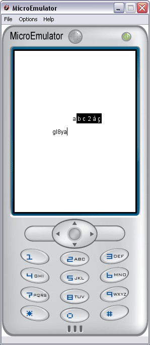

NewsReader prototype for Tiny Mobile Widgets

NewsReader is a complete source sample to display RSS-like content. It is composed of :
- a data downloader: download the RSS file and displays a progress bar during download
- a XML/BML parser: to manage the XML/BML tree in memory
- a list of text items to display the RSS titles
- a scrollable text to display the details of a selected item of the RSS
The download of RSS data file is launched when feedUrl parameter is set.
NewsReader is planned to receive BML or XML data from feedUrl, matching the RSS format. All mandatory meta data are handled.
For more details see this tree example.
A wap link can be proposed to user in the ScrollableText detailed view to know more on one item of the RSS feed. It uses the url contained in field link from XML data. It links to the RSS provider wap/web site. To enable/disable the link see goToSiteFlag parameter.
NewsReader can display one image for each item of the feed in the ScrollableText detailed view. It uses the url contained in field image from XML data. This field is not mandatory.
If an image is displayed, its URL is sent to CADAP to be resized to 60*60 pixel format.
DataLoader Controls
- MFString feedUrl - Url to access the RSS data file (set to path parameter of DataLoader prototype)
- SFInt32 cacheDelay - The delay NewsReader will use cached data, after that need to download fresh data (set to cacheDelay parameter of DataLoader prototype)
- SFString ident - Identifies the data record in cache (set to ident parameter of DataLoader prototype)
Style parameters
- SFFloat itemHeight - Height (in pixels) of each List item
- SFColor textColor - Text color in List and ScrollableText views
- SFColor cursorColor - Cursor color in List (to select current item)
- MFString sepUrl - Separator image url (horizontal line) used into List to separate each item from the others
Display parameters
- SFVec2f size - Size of list and scrollableText pages
- SFString titleLabel - Title of NewsReader pages (mainly RSS label)
- SFBool goToSiteFlag - Enable/Disable user to see more details on the RSS website (via Menu)
- SFBool rtl - Set text display from right to left (arabic)
Navigation Control parameter
- SFBool quitFlag - Indicates to parent scene if 'back' key was pressed into NewsReader to quit the proto